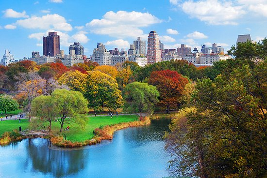

Parliamo di un parco di oltre 300 ettari che fa circa 40 milioni di visitatori l’anno. La sopraggiunta e meritata fama, però, offusca l’enorme fatica che ci è voluta a trasformare nel “polmone verde” di New York quella che nel XIX secolo era una gigantesca palude. Alla bonifica, infatti, parteciparono migliaia di operai agli ordini dei due progettisti
